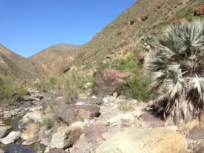

pranet · 出典付きの植物図鑑
石棕
Brahea armata S.Watson · Arecaceae

Brahea armata, commonly known as the blue fan palm, blue hesper palm, or Mexican blue palm, is a flowering plant in the family Arecaceae, native to Baja California and Sonora, Mexico. It typically grows 35–50 feet tall and 1.5–2 feet wide, with a stout trunk, and rigid silver-blue palmate fronds. As a member of subgenus Erythea, it is distinguished by distinctly armed petioles with recurved teeth.
出典: Wikipedia 英語版「Brahea armata」 · CC BY-SA 4.0
異名: Brahea clara (L.H.Bailey) Espejo & López-Ferr., Brahea elegans (Franceschi ex Becc.) H.E.Moore, Brahea glauca hort. ex Hook.f., Brahea lucida Schaedtler, Brahea lucida hort. ex Hook.f., Brahea nobilis Hort.Rollis. ex Hook.f., Brahea roezlii D'Ancona, Brahea roezlii Linden, Erythea armata (S.Watson) S.Watson, Erythea clara L.H.Bailey, Erythea elegans Franceschi ex Becc., Erythea roezlii (D'Ancona) Becc. ex Martelli, Glaucothea armata (S.Watson) O.F.Cook, Glaucothea elegans (Franceschi ex Becc.) I.M.Johnst.
同定や利用は自己責任でお願いします。この図鑑だけを根拠に野生の植物を食べないでください。
出典
- 学名: World Flora Online Plant List 2026-06 · CC0 1.0
- 名前: Wikipedia の記事名と Wikidata · CC0 1.0（Wikidata）。記事名は事実
- 説明: Wikipedia 英語版「Brahea armata」 · CC BY-SA 4.0
- 食用・毒性: World Checklist of Useful Plant Species (Diazgranados et al. 2020, RBG Kew) · CC BY 4.0
- 分布: World Checklist of Vascular Plants (WCVP), RBG Kew, version 2026-06-04 · CC BY 3.0
このページは pranet のデータから自動生成しています。コードは MIT、データは項目ごとのライセンス（説明）。